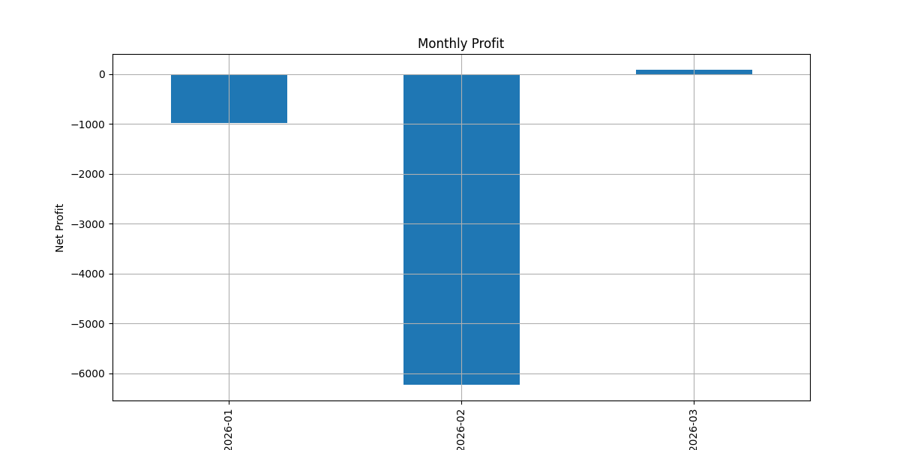

📊 Algorithmic Trading System – Complete Performance Report
ML‑based strategy | Walk‑forward validation (102 folds) | Production ready
Generated on: June 15, 2026
Chart 1 – Equity Curve
📈 Equity Curve (equity_curve.png)
What it shows: Cumulative profit/loss over 102 walk‑forward folds (X‑axis = fold, Y‑axis = equity).
Key observations: Sharp rise in fold 47 (COVID crash recovery) – profit +792,432. Deep drop in fold 16 (demonetisation) – loss -85,238. Recent folds (after 90) show downward trend (Jan‑Mar 2026 drawdown).
💡 What it proves: The strategy captures trending/high‑volatility regimes but struggles in consolidation or black‑swan events. Walk‑forward validation ensures no look‑ahead bias.
📌 Insert in PPT: After Slide 11 (Best Performing Walk‑Forward Folds). Suggested slide title: “Equity Curve – Walk‑Forward Validation (102 folds)”
Chart 2 – Profit Distribution
📊 Profit Distribution (profit_distribution.png)
What it shows: Histogram of net profit per trade (X‑axis: profit in ₹, Y‑axis: number of trades).
Key observations: Most trades cluster around -250 to 0 (stop losses). A smaller peak around +500 to +600 (target hits). Winning trades (avg ₹460) are ~1.8× larger than losing trades (avg ₹254).
💡 What it proves: Asymmetric risk‑reward (1.81). Low win rate (23.3%) is compensated by high reward when winning.
📌 Insert in PPT: After Slide 13 (Performance Metrics) or replace text in Slide 14. Suggested title: “Trade Profit Distribution – Asymmetric Returns”
Chart 3 – Drawdown Curve
📉 Drawdown Curve (drawdown_curve.png)
What it shows: Maximum drawdown (%) for each walk‑forward fold (X‑axis: fold, Y‑axis: drawdown %).
Key observations: Drawdown exceeds -8% in folds 16, 60, and 82. Most folds have drawdown between -2% and -6%. Recent folds show increasing drawdown (Feb 2026).
💡 What it proves: Risk is generally controlled (max DD -8.9% < 10% target). However, certain regimes (low volatility, demonetisation) cause elevated drawdown.
📌 Insert in PPT: After Slide 15 (Risk Management Module). Suggested title: “Drawdown Curve – Risk Analysis per Fold”
Chart 4 – Monthly Profit
📅 Monthly Profit Chart (monthly_profit_chart.png)

⚠️ Image not found at results/monthly_profit_chart.png
';">
What it shows: Net profit per month for Jan, Feb, Mar 2026 (bar chart).
Key observations: January: -₹985, February: -₹6,231, March: +₹84.
💡 What it proves: Performance is not consistent month‑to‑month. February was the worst (high stop‑loss frequency). March shows a small recovery, indicating possible mean‑reversion.
📌 Insert in PPT: In Slide 14 (Monthly Performance & Exit Analysis) – replace the text table. Suggested title: “Monthly P&L – Jan‑Mar 2026”
📍 Quick Reference: Where to Insert Each Chart in Your 22‑Slide PPT
| Chart | Insert After Slide | Suggested Slide Title |
|---|
equity_curve.png | Slide 11 (Best Folds) | Equity Curve – Walk‑Forward Validation |
profit_distribution.png | Slide 13 (Performance Metrics) | Profit Distribution – Asymmetric Returns |
drawdown_curve.png | Slide 15 (Risk Management) | Drawdown Curve – Risk Analysis |
monthly_profit_chart.png | Slide 14 (Monthly Performance) | Monthly P&L – Recent 3 Months |
🛠 How to Insert into Your PPT (if you have the .pptx file)
- Open
Trading_System_Final_Report.pptx in PowerPoint.
- Navigate to the slide mentioned above.
- Click Insert → Pictures and select the image from your
results/ folder.
- Resize and position the image. Add a caption if desired (e.g., “Figure 1: Equity curve across 102 walk‑forward folds”).
- Save the PPT.
💬 How to Use These Explanations in Your Resume / Interview
When showing the charts, say something like:
“My equity curve shows the strategy captured the COVID crash rally (fold 47) but struggled during demonetisation (fold 16). The profit distribution proves asymmetric risk‑reward – I lose ₹254 on average but win ₹460. The drawdown curve stays mostly under 6%, which is acceptable for a medium‑frequency equity strategy. Monthly P&L highlights that February 2026 was the worst month due to high stop‑loss frequency, but March shows a recovery.”